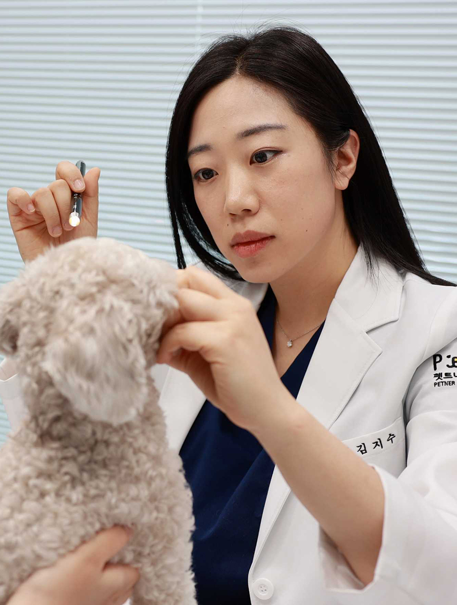
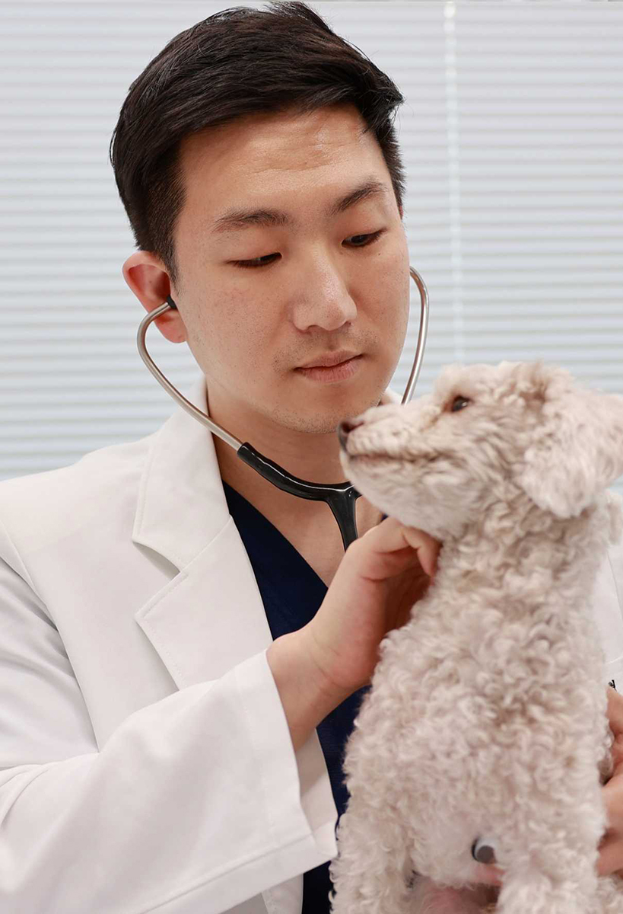
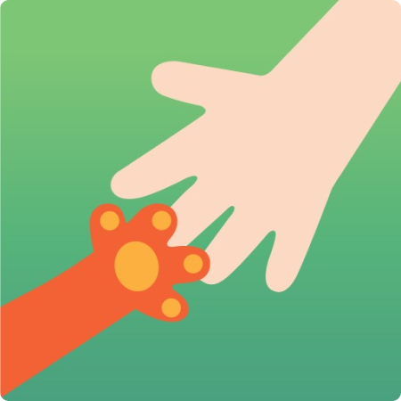
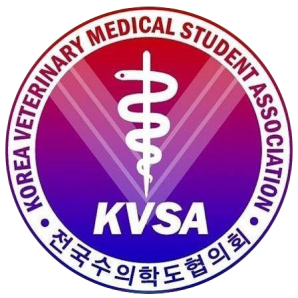
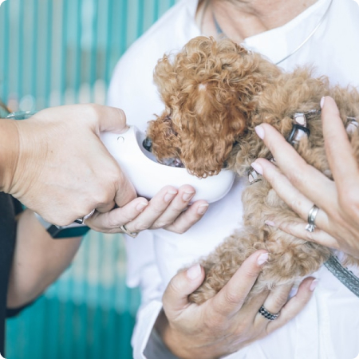

믿음직한 의료진
펫트너 검진센터는 내과와 영상 전공의 석,박사들과 오랜 임상 경력을 가진 주의사 선생님들이 건강 검진을 진행합니다.
-

영상 박사
오나랑 수의사
강원대학교 수의영상의학 박사 수료 전) S**동물메디컬센터 영상의학과장
-

내과 석사
김지수 수의사
충북대학교 수의과대학 수의학과 학사 졸업 충북대학교 수의과대학 임상수의학 대학원 졸업
-

고년차 수의사
송민혁 수의사
전남대학교 수의과대학 수의학과 학사 졸업 전) J* 동물병원 제1 진료과장
협력업체
펫트너는 동물을 위한 협력과 지원을 아끼지 않으며 꾸준하고 질 좋은 교육으로 더 나은 세상을 만들어갑니다.
-

포인핸드와 함께하는 유기견 건강관리
-
위액트 유기견 보호소 유기견들의 건강관리
-
공중방역 수의사 교육
-

수의학과 학생 실습 교육
-

반려동물 ai 데이터 수집
-
건강검진 전문 소프트웨어 제작
찾아오시는 길
검진시간 월~토 10:00~19:00 (일요일 휴진) 점심시간 13:00~14:00
주차안내 센터 좌측과 뒷쪽 유료 주차장 이용 (주차비 지원은 되지 않습니다.)